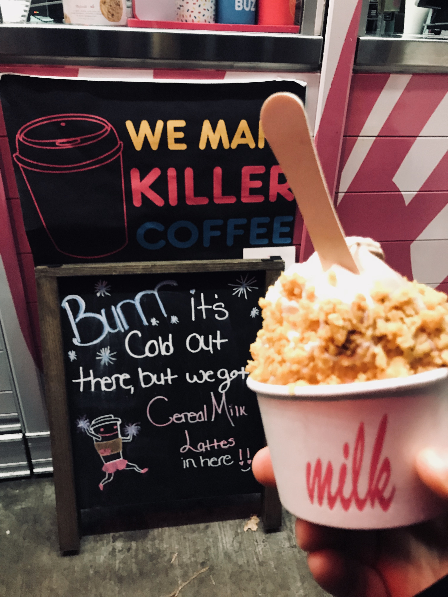

Blog
 Momofuku Milk Bar (feat. Chef David Chang)
Momofuku Milk Bar is Manhattan-based ice-cream & dessert place under Momofuku restaurant group created by Korean-American chef David Chang.
There are several locations for Momofuku Milk Bar in Manhattan, NY.
But, please.....you should go to the one at Mott st. at lower east side of SoHo.
I tried three different places, but they gave me the most.
You can choose either Plain Milk flavor or "Twist" for mix of Milk and Chocolate.
If you try first time, I would stronly recommend the plain Milk Soft Serve with cereal topping.
Especially, after having greasy meal, you can feel refresh with the ice cream
The Milk Soft Serve is not too sweet but has great texture, not too heavy - not too soft.
Also, it is made based on brown sugar and a pinch of salt, you can feel/enjoy the subtle taste on every bite.
If you are interested, please check out.